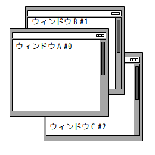
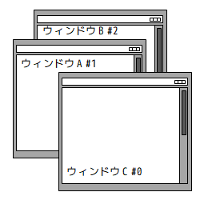

秀丸マクロは現在編集中の文書に対する処理の他に、別のファイルやウィンドウを開いてそのファイルを処理したり、さらに変更内容を保存してファイルを閉じる、といったことができるようになっています。このような複数の秀丸エディタウィンドウにまたがった処理を行うために、秀丸マクロには専用のコマンド群が用意されていますが、ここでは、それらのコマンドの基本的な解説と、実際にコマンドを使う上でいくつか注意すべき点をまとめました。
【１】マクロから別の秀丸エディタウィンドウを開く
【２】複数の秀丸エディタウィンドウの間を移動する
【３】(補足)色々な方法でウィンドウを開く
【４】(補足)秀丸エディタウィンドウの間を移動時の注意点
マクロの編集系や検索系の各種コマンドや関数は、全て現在マクロを実行しているウィンドウに対して働くわけですが、まだ秀丸エディタで開いていないファイルに対してこれらのコマンドを使うにはどうしたらよいでのしょうか？
ここでは、あるファイル(例えば備忘録や雑記メモ)を開いて、そのファイルの一番後ろにカーソルを移動するマクロを作りながら、その方法について解説していくことにしましょう。
まず、マクロからファイルを開くにはopenfileコマンドを使用します。ここで、コマンドの引数には開きたいファイルのファイル名を指定します。例えば、開きたいファイルの名前が C:\foodir\memo.txt だとすると、このファイルを開くには以下のように指定します。
// メモファイルを開く
openfile "C:\\foodir\\memo.txt";ファイル名のパスの区切りの円記号を２つ重ねていますが、何故そうするかについてはこちらの解説を参照してください。また、パス名に空白を含むファイル名の場合は以下のようにファイル名を(円記号＋)２重引用符で括ってください。
// メモファイルを開く(パス名に空白を含む)
openfile "\"C:\\My Documents\\memo.txt\"";このマクロを実行した結果、どのようにファイルが開かれるかはマクロを実行するウィンドウやその他の状態によって異なりますが、その結果自体は秀丸エディタの「ファイルを開く」でファイルを開いたのと同じです。すなわち、このファイルを開いている他の秀丸エディタウィンドウがなければ、新規ウィンドウで実行した場合はそのウィンドウに、別のファイルを開いているウィンドウで実行した場合は、新しくウィンドウが開いてそのファイルが読み込まれた状態になります。一方、このファイルを開いている他のウィンドウがある場合、その結果は秀丸エディタの「排他制御」の設定によって異なります。
いずれにしても、このコマンドが成功した時点で指定したファイルが開かれたウィンドウが画面上の一番手前にあり、かつ以降のマクロコマンドはこのウィンドウが操作対象になります。したがって、例のことを実行するマクロは以下のように書けばよいことになります。
// メモファイルを開く
openfile "C:\\foodir\\memo.txt";
if (result == false){
// ファイルが開けなかった場合
message "メモファイルが開けません";
endmacro;
}
// ここに来た時点でマクロの実行は "memo.txt" に移っている
// "memo.txt" の終わりに移動
gofileend;ファイルがなかったり名前が間違っていたりその他の理由でファイルが開けなかった場合、 openfile コマンドのあとの result キーワードは false(== 0) になっている (成功した場合は true (== 1)になる)ので、それを利用してここで示したようにきちんとエラー処理を行いましょう。
openfile コマンドに完全なファイル名を指定する代わりにワイルドカード文字("*" や "?")を含んだファイル名を指定すると、それにマッチするファイルのみを表示した「ファイルを開く」ダイアログを出して、ユーザーが開くファイルを選択できるようになります。例えば、C:\foodir 中のテキストファイルのどれかを開くためのダイアログを出すには以下のようにopenfile コマンドを使います。
// 「ファイルを開く」ダイアログを出してファイルを開く
openfile "C:\\foodir\\*.txt";openfile コマンドの引数には、以下のようにファイル名の他に秀丸エディタの起動オプションも指定することができます。
openfile "C:\\foodir\\memo.txt"; // 普通に開く
openfile "/r C:\\bardir\\file.txt"; // 書き込み禁止で開く
openfile "/h C:\\bazdir\\work.txt"; // ステルスモードで開く(後述)
openfile "/je \"C:\\My Documents\\memo.txt\""; // 開いた後にカーソルをファイルの最後に移動ここで、最後は空白を含んだパス名を持つファイルをオプション付きで開く時の２重引用符での括り方の例になっています。
ちなみに、openfileの第２引数にファイルを開く時の(デフォルトの)文字コードを指定できます。
// 文字コードを指定してファイルを開く
openfile "C:\\foodir\\memo.txt", sjis;
// 「ファイルを開く」ダイアログを出してファイルを開く(デフォルトの文字コードを指定)
openfile "C:\\foodir\\*.txt", jis;`最後に、既にあるファイルでなくまっさらな状態の新しい秀丸エディタウィンドウを開く方法についてですが、これには先に説明したopenfileコマンドの引数でファイル名を指定しない(起動オプションはあってもよい)か、または別コマンドのnewfile コマンドを使えばできます。但し、openfileを使った場合は、そのコマンドを実行する秀丸エディタウィンドウが同じくまっさらなウィンドウだった時は新しいウィンドウは開かれないので注意が必要です。というわけで、確実に新しいウィンドウを開きたい時はnewfile コマンドの方を使ってください。また、openfileコマンドでファイルを指定する場合も、コマンドを実行したウィンドウが新規ウィンドウだった時は、新しいウィンドウは開かれずにマクロを実行したウィンドウに読み込まれます。よって、確実に新しいウィンドウでファイルを開きたい場合は、以下のようにnewfile と openfile を組み合わせて実行してください。
// 確実に新しいウィンドウでファイルを開く
newfile; // 確実に新規ウィンドウを開く
openfile "C:\\MyDocuments\\memo.txt"; // 今開いたウィンドウにファイルが読み込まれる但し、このように開く場合は起動オプションを指定できないので、起動オプションを指定したい場合はこの方法は使えません。以下のようにすれば起動オプションを指定しつつ確実に別のウィンドウでファイルを開くことができますが、元のまっさらなウィンドウをいじることになりますので、その旨を理解した上で行ってください。
// 起動オプションを指定しつつ確実に新しいウィンドウでファイルを開く
// まっさらなウィンドウだった場合は改行を挿入してまっさらでなくする
if (filename == "" && updated == false) insert "\n";
openfile "/r C:\\foodir\\memo.txt"; // 読込み専用で別ウィンドウを開くここではまっさらなウィンドウをまっさらでなくするために改行を挿入していますが、他にもchangename コマンドで適当なファイル名をつける方法もあります。
今度は逆にウィンドウを閉じる方法ですが、現在マクロを実行しているウィンドウを閉じるには exit、または quitコマンドを使用します。また、ウィンドウを閉じる前に編集内容を保存したい時はsaveexit コマンド、もしくはただの save コマンドと exitコマンドを組み合わせて使います。
但し、これらの終了コマンドを使うとマクロの実行自身も終わってしまうので注意が必要です。これはopenfile を使って開いたウィンドウでも同様で、自動的にマクロの実行が元のウィンドウに戻ることはありません。例えば、マクロ中で作業用ウィンドウを開いてその上で作業をした後に、元のウィンドウに戻って作業を続けようとして以下のようなマクロを作っても、意図した動作をしないわけです。
// 作業ウィンドウを開いてその後元のウィンドウに戻る…？？
// 文字列変数に格納した文字を小文字に変換
$s = "ABCDEF"; // これを "abcdef" に変換する
newfile; // 作業ウィンドウを開く
insert $s; // 文字列を挿入
selectall; // 全て選択
tolower; // 小文字に変換
selectall; // 全て選択
$s = gettext(seltopx,seltopy,selendx,selendy); // 選択範囲の文字列を取得
quit; // このウィンドウを閉じる
insert $s; // 元のファイルに挿入…あれ？この例では、最後の insertコマンドが元のウィンドウで実行されることを期待しているわけですが、実際にやってみると、その前の quitコマンドが実行されて作業ウィンドウが閉じた時点でマクロが終了してしまい、元のウィンドウに文字は挿入されません。
今の例のように、マクロ中で開いたウィンドウを閉じた後も元のウィンドウでマクロの実行を続けたい場合や、いくつかのウィンドウを開いた状態でそれらのウィンドウを行ったり来たりしながらマクロを実行するには、以下の章で説明するウィンドウ管理系のコマンドを使う必要があります。
前章の最後の例を正しい形で実現するには、以下の２点を解決する必要があります。
これらの内、前者はもっと一般的に
と言い換えてもいいわけですが、これはさらに細かく
という問題に分けることができます。以下ではまずこの最初の問題、すなわち「他のウィンドウをどうやって指定するか？」について解説します。
現在開かれているウィンドウをマクロ中で指定するのに、以下のような２通りの方法が用意されています。
ウィンドウ番号とは秀丸エディタウィンドウを画面手前から順番に０から数えたもので、同じウィンドウでも、画面上の位置関係が変わるとそれに従ってウィンドウ番号も変化します。
例えば以下の左図のような配置では、Ａ、Ｂ、Ｃの３つのウィンドウにはそれぞれ０、１、２のウィンドウ番号が割り振られます。ここで、右図のようにウィンドウＣを一番手前に持ってくると、ウィンドウ番号の割り振りがそれぞれＡのウィンドウ番号＝１、Ｂ＝２、Ｃ＝０ に変化します。
|  | ウィンドウＣを → 一番手前にする |
 |
また、前章の例のようにマクロ中で他のウィンドウを開いた場合を考えると、ウィンドウを開く前はマクロを実行しているウィンドウが一番手前にあるはずなので、そのウィンドウのウィンドウ番号は０です。次に、openfile や newfile で新しいウィンドウを開くと、そのウィンドウが一番手前に来ますからウィンドウ番号は０、また元のウィンドウはその後に回るのでウィンドウ番号は１に変わります。ちなみに、マクロの実行は新しく開いたウィンドウに自動的に変わっていたので、マクロを実行しているウィンドウのウィンドウ番号は常に０になっています。なお、この性質は後から解説するウィンドウ間を移動するコマンドでウィンドウを移動した場合も成り立ちます。
さて、あるファイルが開かれているかどうか、また開かれていた時にそのウィンドウ番号を取得するには以下の関数を使います。
findhidemaru(filename)findhidemaru関数は、指定された名前(filename)を持つファイルが(秀丸エディタで)開かれている場合は、そのウィンドウのウィンドウ番号を返します。また、そのファイルを開いているウィンドウが存在しない時、もしくは指定したファイルを開いているウィンドウが現在マクロを実行しているウィンドウだった場合は (ウィンドウ番号０を返す様に思えますが何故か(^^;)-1 を返します。
以下のサンプルマクロは、指定したファイルが開かれていればそのウィンドウ番号を、開かれていないかまたは開いているがそのウィンドウでマクロを実行した場合は -1 をメッセージボックスで表示します。
// ウィンドウ番号を表示するサンプルマクロ
#H_ORDER = findhidemaru("c:\\hidemaru\\install.txt");
message "ウィンドウ番号 = " + str(#H_ORDER);ウィンドウハンドルとは、ＯＳが個々のウィンドウを識別するためにウィンドウに付与する整数値です。これは秀丸エディタウィンドウだけでなく全てのウィンドウに割り振られていますが、この値はウィンドウが開かれた時から閉じられるまで同じ値を取ります。
※ 同じファイルでも、ウィンドウを一度閉じてからまた開いた場合はウィンドウハンドルは一般に異なる値になります。
前述したウィンドウ番号はウィンドウの配置を変えるとそれにしたがって同じウィンドウでも番号が変化していたので、ウィンドウを指定する時には現在のウィンドウの配置がどうなっているかを常に意識する必要があります。一方、ウィンドウハンドルを使えば、ウィンドウの位置関係によらずに常に同じ値でウィンドウを指定することができます。
さて、ウィンドウハンドルを取得するには以下の関数を使います。
hidemaruhandle(windoworder)この関数は、指定されたウィンドウ番号(windoworder)を持つウィンドウのウィンドウハンドルを返します。また、無効なウィンドウ番号を指定した場合は -1 を返します。以下は指定したファイルを開いているウィンドウのウィンドウハンドルを表示するサンプルマクロです。
// ウィンドウハンドルを表示するサンプルマクロ
// まずウィンドウ番号を取得
#H_ORDER = findhidemaru("c:\\hidemaru\\install.txt");
if (#H_ORDER != -1) {
// 有効なウィンドウ番号だった
#H_HANDLE = hidemaruhandle(#H_ORDER);
} else {
// 無効なウィンドウ番号だった
if (filename == "c:\\hidemaru\\install.txt") {
// 現在マクロを実行中のウィンドウで開いていた場合
#H_HANDLE = hidemaruhandle(0); // マクロを実行中のウィンドウのウィンドウ番号は必ず０
}
}
message "ウィンドウハンドル = " + str(#H_HANDLE);なお、このサンプルの無効なウィンドウ番号だった場合の処理で、現在のウィンドウが指定されたファイルを開いている場合をわざわざ確認していますが、これは前節で説明したfindhidemaru 関数の仕様(現在のウィンドウで開いているファイル名を渡された場合も-1 を返す)のためです。また、その中の処理で現在のウィンドウのウィンドウハンドルを取得するためにhidemaruhandle(0) という書き方をしていますが、先程のウィンドウ番号の説明で述べたウィンドウ番号の性質を考えると、これが現在マクロを実行中のウィンドウのウィンドウハンドルを取得する最も確実な方法です。
前節で解説した２通りのウィンドウの指定方法を使って、実際にマクロの実行対象を他のウィンドウに移すには、 setactivehidemaru コマンドを用います。 setactivehidemaruコマンドの引数に移動先のウィンドウのウィンドウ番号、またはウィンドウハンドルを指定すれば、そのウィンドウが画面の一番手前に移動し(つまりウィンドウ番号が０になる)、そのコマンド以降のマクロ文の実行は全てこのウィンドウが対象になります。
以下のサンプルマクロは、元のウィンドウの内容を新しく開いたウィンドウに一行ずつコピーするマクロです。
// 現在のウィンドウの内容を新規ウィンドウに１行ずつコピー
#HWND = hidemaruhandle(0); // 現在のウィンドウのウィンドウハンドルを取得
newfile; // 新規ウィンドウを開く
// 以下の文は新規ウィンドウで実行される
#HWND_NEW = hidemaruhandle(0); // 今開いたウィンドウのウィンドウハンドルを取得
setactivehidemaru #HWND; // 元のウィンドウに戻る
// 以下の文は元のウィンドウで実行される
gofiletop; // ファイルの先頭にカーソルを移動
while (code != eof) { // ファイルの終わりまでループ
copyline; // 行のコピー
setactivehidemaru #HWND_NEW; // コピー先ウィンドウに移動
// 以下新規ウィンドウで実行
paste; // コピーした行を貼り付ける
gofileend; // ウィンドウの終わりにカーソルを移動
setactivehidemaru #HWND; // コピー元ウィンドウに移動
// 以下元のウィンドウで実行
movetolineno 1, lineno + 1; // １行下がる
if (result == false) break; // 最後の行が改行で終わっていない場合への対処
}
setactivehidemaru #HWND_NEW; // コピー先ウィンドウを手前にして終了このサンプルマクロを実際に実行すると、元のウィンドウとマクロ中で新しく開いたウィンドウが目まぐるしく(^^;入れ替わりながら、行のコピー＆ペーストが行われている様子が見て取れると思います。
なお、この例では全ての setactivehidemaruコマンドにウィンドウハンドルを渡していましたが、先に説明したようにウィンドウ番号を渡してもＯＫなので以下のようにも書けます。
// 現在のウィンドウの内容を新規ウィンドウに１行ずつコピー
// setactivehidemaru にウィンドウ番号を渡すバージョン
newfile; // 新規ウィンドウを開く
// 以下の文は新規ウィンドウで実行される
setactivehidemaru 1; // 元のウィンドウに戻る
// 以下の文は元のウィンドウで実行される
gofiletop;
while (code != eof) {
copyline;
setactivehidemaru 1; // コピー先ウィンドウに移動
// 以下新規ウィンドウで実行
paste;
gofileend;
setactivehidemaru 1; // コピー元ウィンドウに移動
// 以下元のウィンドウで実行
movetolineno 1, lineno + 1;
if (result == false) break;
}
setactivehidemaru 1; // コピー先ウィンドウを手前にして終了ここで、全ての setactivehidemaru コマンドに (ウィンドウ番号) 1 を渡していますが、これはコピー元ウィンドウとコピー先ウィンドウが必ず画面の一番手前(＝ウィンドウ番号０…マクロの実行対象)と、そのすぐ後ろ(＝ウィンドウ番号１)に配置されているはずだからです。
ちなみに、他のウィンドウにマクロの実行を移すコマンドは、 setactivehidemaru コマンドの他にも nexthidemaru (一番後ろのウィンドウが手前に来る) や prevhidemaru (一番手前のウィンドウが一番後ろに回る) コマンドがあります。これらを使うと上のサンプルマクロを以下のように書き換えることもできます。
// 現在のウィンドウの内容を新規ウィンドウに１行ずつコピー
// nexthidemaru/prevhidemaru を使うバージョン
newfile; // 新規ウィンドウを開く
// 以下の文は新規ウィンドウで実行される
prevhidemaru; // 新規ウィンドウを一番後ろに回す
// 以下の文は元のウィンドウで実行される
gofiletop;
while (code != eof){
copyline;
nexthidemaru; // 新規ウィンドウを一番手前に戻す
// 以下新規ウィンドウで実行
paste;
gofileend;
prevhidemaru; // 新規ウィンドウを一番後ろに回す
// 以下元のウィンドウで実行
movetolineno 1, lineno + 1;
if (result == false) break;
}
nexthidemaru; // 新規ウィンドウを一番手前に戻して終了setactivehidemaruを使った場合は一番手前とそのすぐ後ろのウィンドウを入れ替えていましたが、この例では一番手前と一番後ろのウィンドウを入れ替えています。これはマクロを実行したウィンドウの他に秀丸エディタウィンドウを開いていた場合でもちゃんと動作するようにするためです。
この章の最初に示した問題の残り、「マクロの実行を終了することなく作業ウィンドウを閉じること」についてですが、これは前節で説明したsetactivehidemaru その他のウィンドウを移動するコマンドと、 closehidemaru または closehidemaruforced コマンドを組み合わせることで実行できます。 closehidemaru(forced) は両者とも引数で渡されたウィンドウ番号またはウィンドウハンドルを持つウィンドウを閉じるコマンドですが、閉じようとしているウィンドウが編集されていた場合、コマンドが失敗する(closehidemaru)か、編集内容を強制的に破棄して終了する(closehidemaruforced)か、という点が異なります。
コマンドが出揃った所で、前章の最後のサンプルマクロを完成させましょう。
// 作業ウィンドウを開いてその後元のウィンドウに戻る(完成版)
// 文字列変数に格納した文字を小文字に変換
$s = "ABCDEF"; // これを "abcdef" に変換する
#HWND = hidemaruhandle(0); // 元ウィンドウのウィンドウハンドルを取得
newfile; // 作業ウィンドウを開く
// 以下は作業ウィンドウでの処理
#HWND_WORK = hidemaruhandle(0); // 作業ウィンドウのウィンドウハンドルを取得
insert $s; // 文字列を挿入
selectall; // 全て選択
tolower; // 小文字に変換
selectall; // 全て選択
$s = gettext(seltopx,seltopy,selendx,selendy); // 選択範囲の文字列を取得
setactivehidemaru #HWND; // 元のウィンドウに戻る
// 元のウィンドウでの処理
closehidemaruforced #HWND_WORK; // 作業ウィンドウを(強制的に)閉じる
insert $s; // 元のファイルに挿入ちなみに、closehidemarusavedといった「保存して終了する」ようなコマンドは用意されていないので、もし終了する前に保存する必要がある場合は、閉じる前にそのウィンドウに移動してsave 等のコマンドを使って明示的に保存しましょう。
最後に、今まで説明したウィンドウ操作系コマンドとマクロ中で別のマクロを実行するexecmacro コマンドを組み合わせて、 (grepの結果ウィンドウのような)ファイル名のリストについてそのファイル１つ１つに対して別のマクロを実行するサンプルを紹介します。
// 秀丸マクロバッチ処理もどき
//
// 秀丸ウィンドウにファイル名のリストを書いておきます。
// grep結果でも可、但し手抜きなのでパス名に"("を含む場合は不可、
// 最終行は読み取れないので改行を入れてください。
// 各行の先頭文字列をファイル名とし、起動して$MacroNameで指定したマクロを
// 実行するのを各ファイル毎に繰り返します。
// $MacroNameのマクロでファイルを更新した場合は必ずsave;が必要。
//
$MacroName = "test.mac";
// 現在のhidemaruhandle保存
#hid = hidemaruhandle(0);
gofiletop;
// ファイル名取得・マクロ実行ループ
while(code != eof) {
beginsel;
searchdown "\\n|\\(",regular;
$file=gettext(seltopx, seltopy, selendx, selendy);
// 存在確認
if (!existfile($file)) {
message "以下のファイルが見つかりませんでした。処理を中断します。\n\n" + $file;
break;
}
// 秀丸起動
openfile $file;
#hid2 = hidemaruhandle(0);
// マクロ実行
execmacro $MacroName;
// テンポラリ画面を閉じる
setactivehidemaru #hid;
closehidemaru #hid2;
// 最終行だったら終わり
golineend2;
if (code == eof) break;
down;
golinetop2;
}
endmacro;マクロから他のウィンドウを開くための解説は一通りしたわけですが、この章ではもう少し実際に近いサンプルをいくつか紹介したいと思います。
第１章で解説したように、 openfileコマンドで指定したファイルが既に開かれていた場合、その後の動作は秀丸エディタの「排他制御」の設定によって変わります。結果的にコマンドが成功したらそのファイルを開いたウィンドウが一番手前に来ているので、その後のマクロの動作に影響はないといえます。ですが、できればそのような設定によらずに同じ動作をするようなマクロを作れれば、それはそれでスマートなことではあります。
というわけで、以下は排他制御の設定によらずに既に指定したファイルが開いていたらそのウィンドウを一番手前に持ってくる(開いていなければ新しく開く)、という処理を行うサンプルマクロです。
// ファイルを開く・またはウィンドウを一番手前に持ってくる
$file = "C:\\foodir\\memo.txt"; // ファイル名
#H_ORDER = findhidemaru($file); // まずウィンドウ番号を取得
if (#H_ORDER != -1) { // ウィンドウが見つかった
#HWND = hidemaruhandle(#H_ORDER); // ウィンドウハンドルを取得
setactivehidemaru #HWND; // そのウィンドウを手前にする
} else { // まだ開かれていないか、自分で開いているか
if ($file != filename) { // まだ開かれていなかった
openfile $file; // 新しく開く
if (result == false) {
message $file + "が開けません";
endmacro;
}
}
// ここに来るのはファイルを開いているのが自分自身か、
// もしくは新しく開いて成功したかどちらか
#HWND = hidemaruhandle(0); // いずれにしてもそのウィンドウは一番手前に来ているはず
}
// この時点で #HWND に $file のウィンドウハンドルが入っていて
// なおかつそのウィンドウが一番手前に来ているはずさて次のサンプルは、第１章の最後の例でもありましたが、マクロ中で一時的に使うための作業ウィンドウを開く処理です。ところで、作業ウィンドウはマクロの実行中にだけ必要なもので、なおかつ作業の様子はなるべく見られたくないですから、できればウィンドウが見えない状態で開ければ一番いいわけです。で、まさにそういう(いわゆる「ステルス状態」の)ウィンドウを開くための起動オプション("/h")が用意されているので、ここでもそれを使うことにしましょう。
// ウィンドウを見えない状態で開くサンプルマクロ
// 以下の処理が必要な理由は第１章を参照
#modify_org = false; // 元のウィンドウをいじったかどうかのフラグ
if (filename == "" && modified == false) { // 元のウィンドウが新規ウィンドウの場合
insert "\n"; // 下の openfile が失敗しない様に一時的に更新しておく
#modify_org = true; // あとで元に戻す
}
#hwnd_org = hidemaruhandle(0); // 元のウィンドウのウィンドウハンドルを取得しておく
openfile "/h"; // ステルス状態で新規ウィンドウを開く
#hwnd_work = hidemaruhandle(0); // ステルスウィンドウのウィンドウハンドルを取得
... // 作業ウィンドウで何かの仕事をする
setactivehidemaru #hwnd_org; // 最後に元のウィンドウに戻る
closehidemaruforced #hwnd_work; // ステルスウィンドウを閉じる
if (#modify_org) undo; // 元のウィンドウをいじっていたら元に戻すここで使ったステルスウィンドウですが、必ずマクロ内で責任を持って閉じるようにしましょう。最近のバージョンの秀丸エディタではステルスウィンドウを閉じ忘れても、マクロが終了したら自動的に可視状態に変わるので、それほど神経質になる必要はないのですが、いずれにしても身に覚えのないウィンドウが突如(^^;出現するわけですから、気持ちの悪いことこのうえないです。というわけで、上のサンプルのように作業ウィンドウを開いたら、ちゃんと後始末をするようにしましょう。
マクロ実行中にウィンドウを切り替える場合の注意点
外部DLLをロードしている場合は、loaddll文/loaddll関数の有効範囲に注意してください。詳細は、[HMM0081A]●「DLLがロードされてないのにdllfunc関数が使われました」と表示されるの、「loaddll文/loaddll関数の有効範囲の問題」を参照してください。